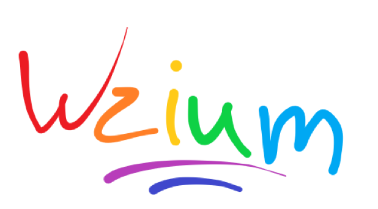

Definicja ,,wzium" - Wzium Wiki
Strefa Wzium!

Co znaczy wzium?
Wzium znaczy więcej niż 1000 słów, ale mniej niż 2000
Zastosowanie wzium:
Wziumować może każdy, ale prawdziwym wziumerem może nazwać się tylko ten, kto zna genezę tego słowa.
Wypowiedź workonfire#8262:
,,a geneza jest taka, że kiedyś.. no.. mój przyjaciel grał mi kiedyś na gitarze utwór "Rammstein - DEUTSCHLAND", i dokładnie w 1:24 tego utworu (zgodnie z oficjalnym teledyskiem na YT) jest po prostu wibrato, którego nie dało się nazwać inaczej, niż.. właśnie wzium (i mój przyjaciel właśnie to zapoczątkował). i stąd wziął się "trend" na nazywanie każdej nieopisywalnej ludzkimi słowami rzeczy, właśnie wziumem.
i w sumie pewnego dnia powróciłem do swojej rodzinnej krainy, obecnie Wziumolandii, a dawniej właśnie zwana po prostu X (oficjalnie nie miała nazwy ale tak ją potocznie zwali). wróciłem tam i zacząłem wziumować, każdą rzecz na jaką spojrzałem wzrok zacząłem nazywać wziumem, bo w tamtej krainie nic nie jest jak tu i nic nie było opisywalne ludzkimi słowami, stąd właśnie to nazewnictwo. mieszkańcy tej krainy to podpatrzyli i zaczęli mówić tak jak ja. pewnego dnia, tak o, z nudów poszliśmy wszyscy do władcy krainy X i przedstawiliśmy mu całą sytuację: że jest inny świat, że w innym świecie to my dla nich jesteśmy unikatowi i nieopisywalni, a władca od zawsze szukał określenia na to. no i zaproponowaliśmy mu właśnie nazwę "Wzium" na to wszystko, na całą naszą rzeczywistość. wtedy trochę zmodyfikowała się przeszłość, bo wszystkie rzeczy zwane wcześniej z prefiksem X (np. XBrowser, XBank) zostały teraz po prostu nazwane WziumBrowser, WziumBank itp.
i to nie był żaden rebranding, tylko po prostu.. no.. no zmieniła się przeszłość. i po pewnym czasie wróciłem znów do tego świata i "wzium" oznaczało już.. no.. no wziumy. gdzie jeden wzium znaczy więcej niż 1000 słów, ale mniej niż 2000."
Ważne: Thirsdroid przesłał mi to zdjęcie.